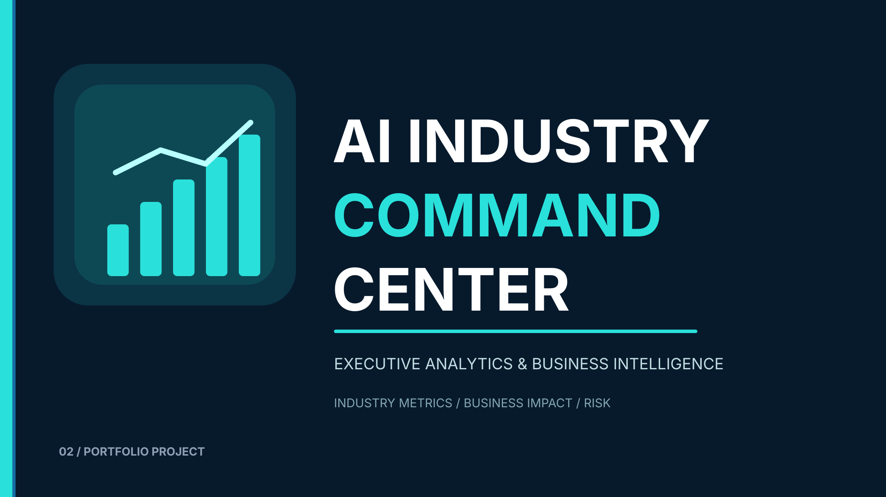

● ● ● AI INDUSTRY COMMAND CENTER

AI INDUSTRY
COMMAND CENTER
Executive reporting · KPI design · Data governance
FROM MARKET DATA TO EXECUTIVE QUESTIONS
BUSINESS INTELLIGENCE
AI Industry
Command Center
A dashboard that connects AI-industry metrics with business implications, risks and recommended follow-up.
Portfolio demonstration; includes estimated, forecast, and illustrative data.